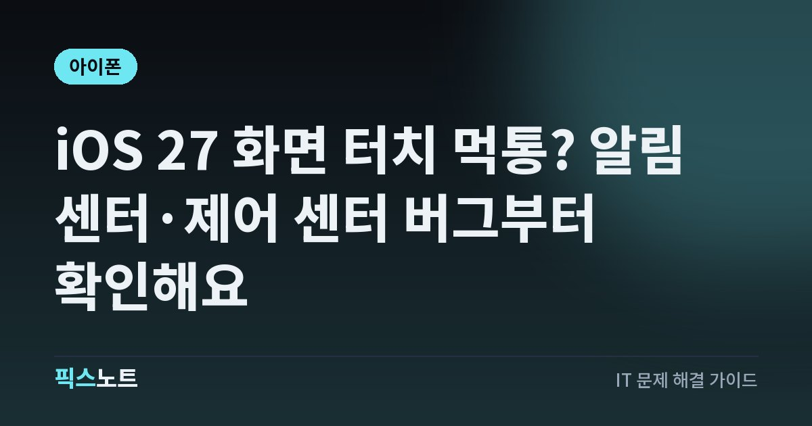

iOS 27 화면 터치 먹통? 알림 센터·제어 센터 버그부터 확인해요
iOS 27에서 알림 센터와 제어 센터를 함께 열다 터치가 멈출 때 해결 순서를 확인해요.

iOS 27로 올린 뒤 화면은 켜져 있는데 터치가 갑자기 안 먹는다면 하드웨어 고장부터 의심할 필요는 없어요. Apple은 알림 센터와 제어 센터를 동시에 열 때 터치스크린이 반응하지 않을 수 있던 문제를 iOS 27.0.1에서 수정했다고 밝혔어요. 해당 상황인지 가리고 업데이트와 강제 재시동을 적용하는 순서로 정리해요.
결론부터: iOS 27.0이라면 27.0.1 업데이트를 먼저 봐요
Apple의 iOS 27 업데이트 문서에는 iOS 27.0.1에서 알림 센터와 제어 센터를 동시에 열 때 터치스크린이 반응하지 않을 수 있던 문제를 수정했다고 적혀 있어요. 그래서 iOS 27.0을 쓰는 중이고 두 화면을 빠르게 열다가 터치가 멈추는 증상이 반복된다면 액정 교체나 초기화보다 소프트웨어 버전을 먼저 확인하는 게 맞아요. iOS 27.0.1 이상 업데이트가 제공된다면 중요한 데이터를 백업한 뒤 적용하고, 같은 동작에서 다시 재현되는지 확인하세요. 다른 상황에서도 터치가 계속 끊긴다면 별도 원인일 수 있어요. 증상이 한 번 있었다는 이유만으로 화면 부품 문제라고 단정하지 말고, 정확한 버전과 발생 상황을 먼저 적어 두세요.
이 버그에 가까운 증상인지 먼저 구분해요
공식 수정 항목은 특정 동작과 연결돼 있어요. 알림 센터와 제어 센터를 거의 동시에 열었을 때 화면 표시 자체는 남아 있는데 손가락 입력이 먹지 않는 현상이라면 설명과 잘 맞아요. 반대로 충전 중에만 터치가 튀거나, 화면 특정 부분만 늘 안 눌리거나, 떨어뜨린 뒤부터 문제가 시작됐다면 액세서리나 화면 손상 같은 다른 원인도 함께 봐야 해요. 특정 앱 안에서만 멈추고 홈 화면에서는 정상이라면 앱 문제 가능성도 있어요. 문제가 생긴 직전 동작과 iOS 버전을 기록해 두면 업데이트로 해결됐는지 판단하기 쉬워져요. 화면 밝기나 주사율 같은 설정을 무작정 바꾸기보다 재현 조건을 먼저 좁히는 편이 좋아요.
터치가 되는 상태라면 iOS 버전부터 확인해요
화면 조작이 가능한 상태라면 먼저 현재 iOS 버전을 확인하고 업데이트가 있는지 살펴보세요. Apple은 iOS 27.0.1 릴리스 노트에 이 터치 문제 수정 내용을 명시했어요.
- 현재 iOS가 27.0인지 27.0.1 이상인지 확인해요.
- 소프트웨어 업데이트에 새 버전이 보이면 중요한 데이터를 먼저 백업해요.
- 업데이트를 설치하고 재시동된 뒤 알림 센터와 제어 센터를 같은 방식으로 열어 재현되는지 확인해요.
- 재현되지 않으면 다른 설정을 한꺼번에 바꾸지 말고 며칠 동안 같은 조건에서 지켜봐요.
완전히 멈췄다면 강제 재시동 순서대로 해요
터치가 전혀 먹지 않아 일반적인 재시동 메뉴를 사용할 수 없다면 Apple이 안내하는 강제 재시동 절차를 사용할 수 있어요. Face ID가 있는 최근 iPhone은 버튼을 짧고 순서대로 눌러야 해요.
- 음량 높이기 버튼을 빠르게 눌렀다 놓아요.
- 음량 낮추기 버튼을 빠르게 눌렀다 놓아요.
- 측면 버튼을 Apple 로고가 보일 때까지 길게 눌러요.
강제 재시동은 멈춘 기기를 다시 시작하는 방법이에요. 다시 켜진 뒤에는 같은 문제가 반복되는지와 현재 iOS 버전을 확인하세요. 버튼을 길게 누르는 타이밍이 맞지 않아 반응이 없더라도 여러 메뉴를 동시에 누르기보다 Apple 안내 순서 그대로 다시 시도하세요.
업데이트 전에는 백업과 전원 상태를 챙겨요
터치 문제가 소프트웨어 버그로 의심되더라도 업데이트 중 전원이 꺼지거나 저장 공간이 부족하면 작업이 꼬일 수 있어요. 가능하면 안정적인 Wi‑Fi와 충분한 배터리 상태에서 진행하고, 중요한 사진과 문서가 있다면 iCloud나 컴퓨터에 최근 백업이 있는지 먼저 확인하세요. 기기가 간헐적으로만 터치되는 상태라면 반복 재현을 시도하기보다 조작이 될 때 백업부터 확보하는 편이 좋아요. 업데이트가 끝난 뒤에는 한 번에 여러 설정을 바꾸지 말고, 터치 증상만 먼저 확인해 어떤 조치가 효과가 있었는지 구분하세요. 백업 시점과 업데이트 전후 버전을 같이 기록해 두면 나중에 Apple 지원에 설명하기도 쉬워져요.
케이스·보호필름·연결 액세서리도 따로 확인해요
Apple의 일반적인 화면 문제 안내에서는 화면을 깨끗하고 마른 상태로 유지하고, Lightning이나 USB‑C 액세서리를 분리하고, 케이스나 화면 보호필름을 제거해 반응을 다시 확인하도록 안내해요. 이 절차는 iOS 27.0의 특정 버그 자체를 고치는 방법이라기보다 다른 터치 원인을 분리하는 데 도움이 돼요. 충전 케이블이나 허브를 연결할 때만 문제가 생긴다면 액세서리를 뺀 상태와 비교하세요. 화면 한쪽 영역만 계속 반응하지 않으면 소프트웨어 업데이트만으로 해결되지 않을 수 있으니 물리적 손상 여부도 함께 확인하세요. 동일한 위치에서만 반복된다면 증상 사진이나 짧은 영상으로 남겨 두는 것도 좋아요.
27.0.1 이후에도 반복되면 기록을 남기고 지원을 받아요
iOS 27.0.1 이상으로 업데이트한 뒤에도 같은 동작에서 터치가 멈춘다면 Apple이 이미 수정한 알려진 문제와 별개일 수 있어요. 문제가 발생한 iPhone 모델, 정확한 iOS 버전, 알림 센터와 제어 센터를 어떤 순서로 열었는지, 강제 재시동 뒤에도 반복되는지 적어 두세요. 화면 손상이나 액체 접촉, 특정 액세서리 연결 여부도 함께 확인하면 좋아요. 중요한 데이터 백업을 확보한 뒤 Apple 지원이나 공인 서비스 제공업체에 이 기록을 전달하면 소프트웨어 문제와 화면 하드웨어 문제를 나누는 데 도움이 돼요. 가능하면 증상이 생긴 시간대와 당시 실행 중이던 앱도 적어 두세요. 업데이트 후 한동안 정상이다가 다시 생기는지까지 기록하면 일회성 멈춤과 반복 문제를 구분하기 쉬워져요.
자주 묻는 질문
iOS 27.0.1이 터치 먹통 문제를 고친 게 맞나요?
네. Apple의 iOS 27 업데이트 문서에는 알림 센터와 제어 센터를 동시에 열 때 터치스크린이 반응하지 않을 수 있던 문제를 iOS 27.0.1에서 수정했다고 나와 있어요.
터치가 아예 안 되는데 업데이트를 어떻게 하나요?
먼저 Apple 안내대로 강제 재시동해 기기를 다시 켜 보세요. 터치가 돌아오면 현재 iOS 버전과 업데이트 여부를 확인하고, 가능하면 중요한 데이터를 백업한 뒤 업데이트를 진행하세요.
27.0.1인데도 터치가 멈추면 액정 고장인가요?
바로 액정 고장으로 단정할 수는 없어요. 특정 앱, 연결 액세서리, 케이스나 보호필름, 화면 손상 여부를 나눠 확인하고 같은 증상이 반복되면 Apple 지원에 정확한 버전과 재현 조건을 전달하세요.
강제 재시동하면 아이폰 데이터가 지워지나요?
강제 재시동은 멈춘 iPhone을 버튼 조합으로 다시 시작하는 절차예요. 공장 초기화와는 다른 작업이에요. 다만 기기 상태가 불안정하다면 다시 켜진 뒤 중요한 데이터 백업을 먼저 확인하세요.